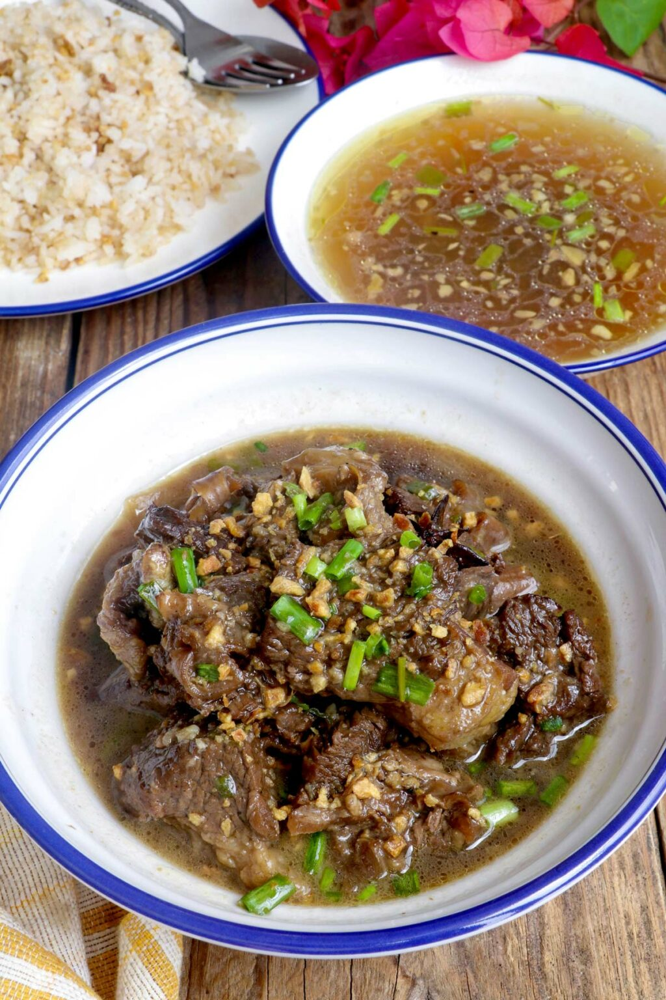

Beef Pares

Description
The word pares means pair or pairing in English.
This term was coined because the beef stew is always served with rice and soup as part of an all-in-one,
low-cost meal set sold in local roadside eateries. Beef Pares is a popular dish for motorists looking for a hot,
filling meal after a long day on the road.
This dish is also available at carinderias or pares houses near local establishments
such as schools, hospitals, and factories. It is so well-loved and popular that even
some high-end restaurants have included this dish on their menus.
Ingredients
- Beef
- Oil
- Onion
- Garlic
- Soy Sauce
- Brown Sugar
- Water
- Pepper
- Salt
- Spring Onions
- Star Anise
- Five Spice
- Peppercorn
- Cornstarch
- Bay Leaves
- Toasted Garlic
- Rice
Steps in making Beef Pares
- Blanch the beef for about 8 to 10 minutes to keep the broth clear and sediment-free. Change the water, rinse the meat well, and simmer with aromatics until tender.
- When beef is tender, drain from the liquid and braise in a soy sauce, brown sugar, and star anise mixture reminiscent of Chinese Asado.
- Reserve the broth and keep warm on low heat. If you want to remove more of the sediments, you can strain the broth using a cheesecloth or fine-mesh sieve. Garnish with chopped scallions when ready to serve.
- Make sinangag. For best results, use cold, day-old cooked rice.